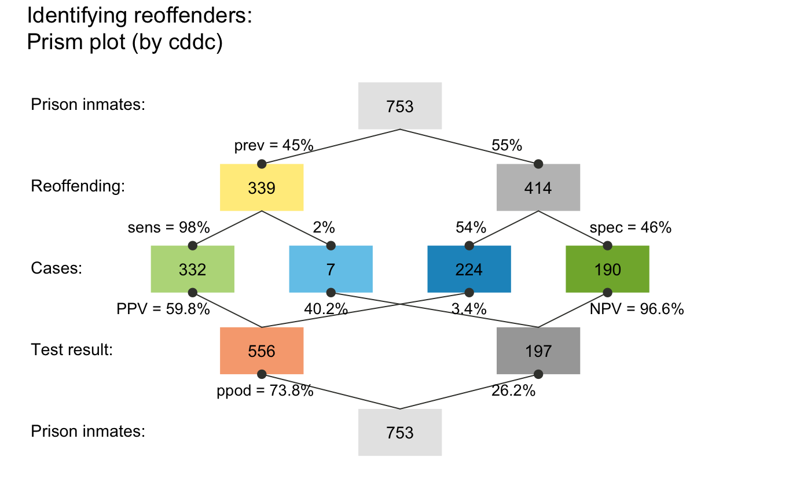
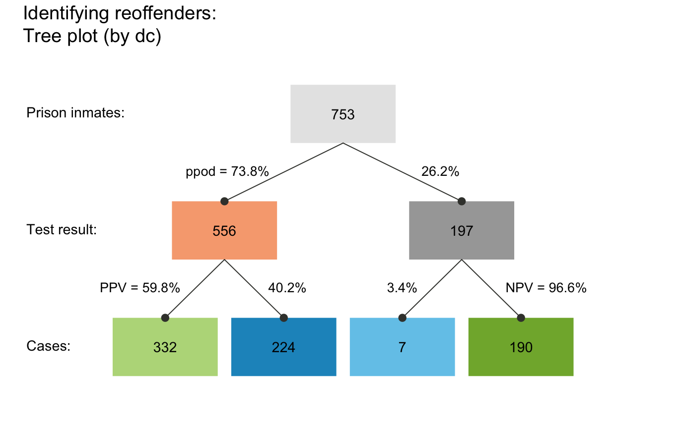
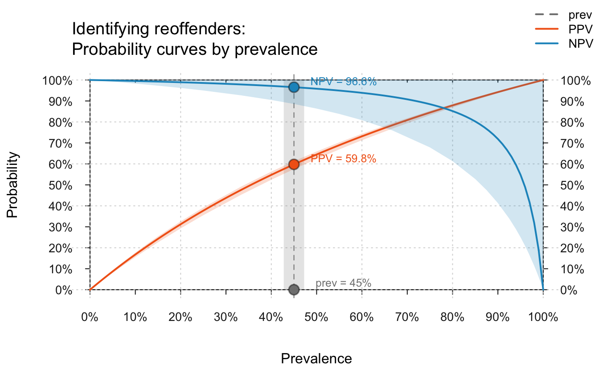
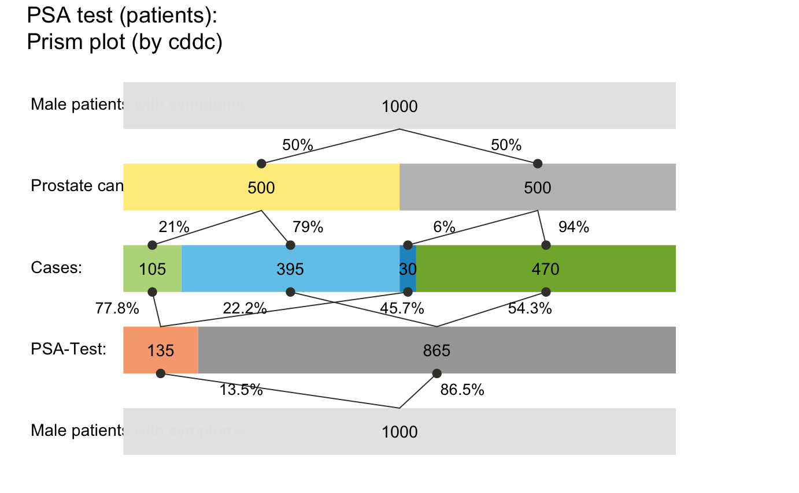
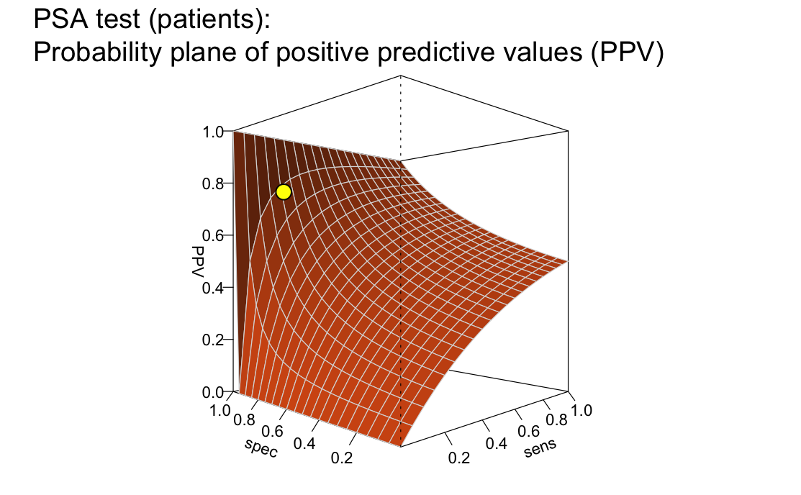
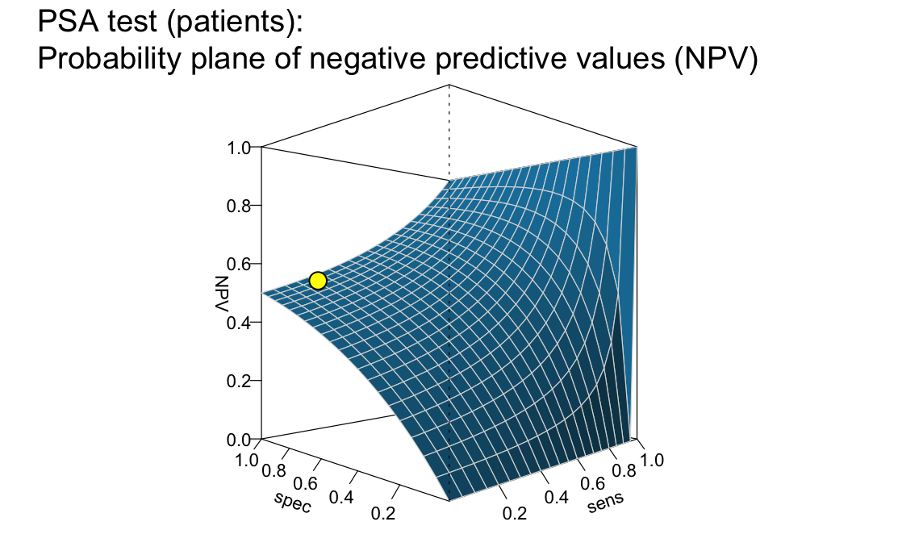

Quick Start Primer
Nico Gradwohl & Hansjörg Neth, SPDS, uni.kn
2018 03 12
Source:vignettes/E_riskyr_primer.Rmd
E_riskyr_primer.Rmd 
riskyr is a toolbox for rendering risk literacy more transparent. Its goal is to gain insights into risk-related scenarios with a minimum of hassle and maximum of fun.
This page assumes that you just installed the package and are eager to see what you can do with it.
(See the User guide for a more comprehensive introduction.)
Getting started
How can you use riskyr? Basically, there are two ways to get started:
Define your own scenario from risk-related information (typically provided in terms of probabilities).
Inspect one of 24 predefined scenarios to get a glimpse of what types of scenarios are possible.
Either way, you will soon explore some specific risk-related scenario and uncover relationships between its parameters. Please load the package first, if you have not already done so:
library("riskyr") # loads the packageDefining a scenario
Let’s launch your riskyr-career by creating a ficticious risk scenario that we construct from scratch:1
Example
Identifying reoffenders
Imagine you are developing a test to predict if a jailed criminal offender will reoffend after his or her release. Your research yields the following information:
- 45% of 753 jailed offenders in some prison re-offend after they are released (
prev = .45).
- Your test correctly detects those who will re-offend in 98% of the cases (
sens = .98).
- Your test falsely identifies 54% of those who will not re-offend as potential re-offenders. Conversely, this implies that your test correctly identifies 46% of those that will not reoffend (
spec = .46).John D. is about to get released and is tested. The test predicts that he will reoffend.
What is the probability that John D. will actually reoffend, given his test result?
To answer this question, you could calculate the corresponding probabilities or frequencies (as explained in the user guide). Alternatively, you can use the riskyr() function to create a riskyr scenario that you can modify, inspect, and visualize in various ways.
Necessary scenario information
First, we need to translate the numeric information provided in our example into parameter values:
The probability of reoffending provides the prevalence in our population:
prev = .45.The test’s conditional probability of correctly detecting a reoffender provides its sensitivity:
sens = .98.The test’s conditional probability of correctly detecting someone who will not reoffend provides its specificity:
spec = .46.
(This corresponds to a false alarm ratefart = 1 - spec = .54.)In addition, the population size of your sample was mentioned to be
N = 753.2
The following code defines a perfectly valid riskyr scenario from 3 essential probabilities:
# Create a minimal scenario (from probabilities):
my_scenario <- riskyr(prev = .45,
sens = .98,
spec = .46)This creates my_scenario from 3 essential probabilities (prev, sens, and spec or fart) and computes a suitable population size N of 1000.
Alternatively, we could create the same minimal scenario from 4 essential frequencies (if they are known). The following code creates the scenario a second time, but now uses the frequencies of my_scenario to do so:
# Create a minimal scenario (from frequencies):
my_scenario_2 <- riskyr(hi = my_scenario$hi,
mi = my_scenario$mi,
fa = my_scenario$fa,
cr = my_scenario$cr)If this succeeds, my_scenario and my_scenario_2 contain the same information:
all.equal(my_scenario, my_scenario_2)
#> [1] TRUEOptional scenario information
To make various outputs more recognizable, many aspects of a riskyr scenario can be described by setting optional arguments:
-
scen_lblspecifies a label by which you can recognize the scenario (e.g., “Identifying reoffenders”).
popu_lblspecifies the population of interest (e.g., “inmates”).-
cond_lblspecifies the condition of interest (i.e., “reoffending”). -
cond_true_lblspecifies a label for the condition being true (“offends again”). cond_false_lblspecifies a label for the condition being false (“does not offend again”).-
dec_lblspecifies the nature of the decision, prediction, or test (“test result”). -
dec_pos_lblspecifies a positive decision regarding the condition (“predict to reoffend”). dec_neg_lblspecifies a negative decision regarding the condition (“predict to not reoffend”).-
hi_lbl,mi_lbl,fa_lbl, andcr_lblspecify the four possible combinations of conditions and decisions:- hit: The test predicts that the inmate reoffends and s/he does (“reoffender found”);
- miss: The test predicts that the inmate does not reoffend but s/he does (“reoffender missed”);
- false alarm: The test predicts that the inmate reoffends but s/he does not (“false accusation”;
- correct rejection: The test predicts that the inmate does not reoffend and s/he does not (“correct release”).
- hit: The test predicts that the inmate reoffends and s/he does (“reoffender found”);
Whereas specifying three essential probabilities is necessary to define a valid riskyr scenario, providing N and the other arguments are entirely optional. For illustrative purposes, we create a very well-specified riskyr scenario:
# Create a scenario with custom labels:
my_scenario <- riskyr(scen_lbl = "Identifying reoffenders",
popu_lbl = "prison inmates",
cond_lbl = "reoffending",
cond_true_lbl = "reoffends", cond_false_lbl = "does not reoffend",
dec_lbl = "test result",
dec_pos_lbl = "predict to\nreoffend", dec_neg_lbl = "predict to\nnot reoffend",
hi_lbl = "reoffender found", mi_lbl = "reoffender missed",
fa_lbl = "false accusation", cr_lbl = "correct release",
prev = .45, # prevalence of being a reoffender.
sens = .98, # p( will reoffend | offends again )
spec = .46, # p( will not reoffend | does not offend again )
fart = NA, # p( will reoffend | does not offend gain )
N = 753, # population size
scen_src = "(a ficticious example)")Viewing scenario information
The simple graph has brought more information to the data analyst’s mind than any other device. (…) the meat of the matter can usually be set out in a graph.
(John W. Tukey)3
We always can inspect the details of my_scenario by computing additional metrics and studying their values with summary(my_scenario). But anyone who regularly works with data knows that graphs can provide key insights faster and in different ways than written summaries and tables. To illustrate this point, we create and inspect some visualizations of our scenario.
Prism plot
plot(my_scenario)
A prism plot (or network diagram) shows key frequencies as colored boxes and corresponding probabilities as the edges that connect the boxes. In this particular version, the size of the boxes is fixed. However, we can visualize the relative size of frequencies by using the area argument and show the names of the frequencies (as provided by our text labels) by adding the f_lbl = "nam" argument. To save space, we do not show the plots here, but please try and see for yourself:
plot(my_scenario, area = "sq", f_lbl = "nam", p_lbl = "mix") # show frequency names
plot(my_scenario, area = "hr", f_lbl = "num", p_lbl = "num") # only numeric labelsThe resulting graph maps frequency to the size of square boxes, which makes it easier to distinguish between cases with high and with low frequencies.
Practice
- Plot
my_scenariowith the optionarea = "hr". What do you see? - Add
by = "cdac"as another argument to your plotting call. How does the resulting plot relate to the previous ones? - When calling
plot(my_scenario),riskyrcreates a plot oftype = "prism"by default. Use?plot_prismfor the documentation ofplot_prismto learn about and try out additional arguments.
Icon array
An icon array displays the entire population of inmates classified by condition (whether they will reoffend or not) and decisions (our test’s predictions). We can plot this display for our scenario by using the plot function and specifying the type = "icons":
plot(my_scenario, type = "icons")
From the icon array, we can easily see that roughly half of the inmates reoffend (see the icons in dark green and dark blue). The majority of the reoffenders are classified correctly (shown in dark green rather than dark blue).
But where is John D.? His test result predicted that he would reoffend. Depending on his actual behavior, this means that he will either be classified as a “reoffender found” (if he actually reoffends: dark green icons) or as a “false accusation” (if he does not reoffend: light red icons). As there are a similar number of both types of icons (with some skew towards “reoffenders found”), it appears that his chances of actually reoffending are only slightly higher than chance.
To dig deeper into the dirty details of my_scenario, let us look at its summary:
summary(my_scenario)
#> Scenario: Identifying reoffenders
#>
#> Condition: reoffending
#> Decision: test result
#> Population: prison inmates
#> N = 753
#> Source: (a ficticious example)
#>
#> Probabilities:
#>
#> Essential probabilities:
#> prev sens mirt spec fart
#> 0.45 0.98 0.02 0.46 0.54
#>
#> Other probabilities:
#> ppod PPV NPV FDR FOR acc
#> 0.738 0.598 0.966 0.402 0.034 0.694
#>
#> Frequencies:
#>
#> by conditions:
#> cond_true cond_false
#> 339 414
#>
#> by decision:
#> dec_pos dec_neg
#> 556 197
#>
#> by correspondence (of decision to condition):
#> dec_cor dec_err
#> 522 231
#>
#> 4 essential (SDT) frequencies:
#> hi mi fa cr
#> 332 7 224 190
#>
#> Accuracy:
#>
#> acc:
#> 0.694The text output (printed in R’s console window) provides a brief description of our scenario (i.e., its name, the condition and decision of interest, as well as the type and size of population), followed by a range of numeric parameters (structured into probabilities, frequencies, and overall accuracy).
In the present case, we were interested in a person’s conditional probability of reoffending given a positive test result. This metric is also known as the positive predictive value (PPV). Our summary information shows PPV = 0.598. Thus, based on the information provided, John D.’s probability of reoffending is 59.8% (quite in line with our visual estimate from the icon array above).
Alternative perspectives
An alternative way to view the our scenario is a frequency tree that splits the population into two subgroups (e.g., by the two possible results of our test) and then classify all members of the population by the possible combinations of decision and actual condition, yielding the same four types of frequencies as identified above (and listed as hi, mi, fa, and cr in the summary above):
plot(my_scenario, type = "tree", by = "dc") # plot tree diagram (splitting N by decision)
The frequency tree also shows us how the PPV (shown on the arrow on the lower left) can be computed from frequencies (shown in the boxes): PPV = (number of offenders found)/(number of people predicted to reoffend) (or PPV = hi/dec_pos). Numerically, we see that PPV = 332/556, which amounts to about 60% (or 1 - 0.403).
The tree also depicts additional information that corresponds to our summary from above. For instance, if we had wondered about the negative predictive value (NPV) of a negative test result (i.e., the conditional probability of not offending given that the test predicted this), the tree shows this to be NPV = 190/197 or about 96.4% (as NPV = cr/dec_neg). Again, this closely corresponds to our summary information of NPV = 0.966.4
A good question to ask is: To what extend do the positive and negative predictive values (PPV and NPV) depend on the likelihood of reoffending in our population (i.e., the condition’s prevalence)? To answer this, the following code allows to show conditional probabilities (here PPV and NPV) as a function of prev (and additionally assumes a 5%-uncertainty concerning the exact parameter values):
plot(my_scenario, type = "curve", uc = .05)
As before, we can read off that the current values of PPV = 59.76% and NPV = 96,56%, but also see that our 5%-uncertainty implies relatively large fluctuations of the exact numeric values. Importantly, the curves also show that the prevalence value is absolutely crucial for the value of both PPV and NPV. For instance, if prev dropped further, the PPV of our test was also considerably lower. In fact, both the PPV and NPV always vary from 0 to 1 depending on the value of prev, which means that specifying them is actually meaningless when the corresponding value of prev is not communicated as well. (See the guide on functional perspectives for additional information and options.)
Having illustrated how we can create a scenario from scratch and begin to inspect it in a few ways, we can now turn towards loading scenarios that are contained in the riskyr package.
Using existing scenarios
As defining your own scenarios can be cumbersome and the literature is full of existing problems (that study so-called Bayesian reasoning), riskyr provides a set of – currently 25) – pre-defined scenarios (stored in a list scenarios). The following table provides a first overview of the scenarios available, including their relevant condition, their population size N, and basic probability information:
| Scenario | Condition | N | prev | sens | spec | fart |
|---|---|---|---|---|---|---|
| Bowel cancer screening | Bowel cancer | 2030 | 0.015 | 0.667 | 0.910 | 0.090 |
| Cab problem | Company | 100 | 0.150 | 0.800 | 0.800 | 0.200 |
| Hemoccult test | Colorectal cancer | 100000 | 0.300 | 0.050 | 0.970 | 0.030 |
| Mammography | Breast cancer | 1000 | 0.010 | 0.800 | 0.900 | 0.100 |
| Mammography (freq) | Breast cancer | 1000 | 0.010 | 0.800 | 0.904 | 0.096 |
| Mammography (prob) | Breast cancer | 1000 | 0.010 | 0.800 | 0.904 | 0.096 |
| Mushrooms | Color | 100 | 0.200 | 0.200 | 0.950 | 0.050 |
| Musical town | Choir membership | 1000 | 0.500 | 0.200 | 0.400 | 0.600 |
| PSA test (baseline) | Prostate cancer | 1000 | 0.063 | 0.210 | 0.940 | 0.060 |
| PSA test (patients) | Prostate cancer | 1000 | 0.500 | 0.210 | 0.940 | 0.060 |
| Psylicraptis screening | Psylicraptis | 100 | 0.010 | 0.900 | 0.990 | 0.010 |
| Sepsis | Sepsis | 100 | 0.100 | 0.800 | 0.900 | 0.100 |
| Amniozentese | Trisomie 21 | 10000 | 0.080 | 0.994 | 0.995 | 0.005 |
| HIV-Test | HIV | 100000 | 0.000 | 1.000 | 1.000 | 0.000 |
| HIV-Test | HIV | 250000 | 0.000 | 1.000 | 1.000 | 0.000 |
| HIV-Test | HIV | 10000000 | 0.000 | 0.997 | 1.000 | 0.000 |
| HIV-Test | HIV | 10000000 | 0.000 | 0.997 | 1.000 | 0.000 |
| Mammografie | Brustkrebs | 1000 | 0.010 | 0.900 | 0.910 | 0.090 |
| Mammografie | Brustkrebs | 1000 | 0.010 | 0.900 | 0.910 | 0.090 |
| Mammografie | Brustkrebs | 1000 | 0.600 | 0.900 | 0.910 | 0.090 |
| Mammografie | Brustkrebs | 1000 | 0.940 | 0.900 | 0.910 | 0.090 |
| Nackenfaltentest (NFT) | Trisomie 21 | 1000 | 0.010 | 0.900 | 0.950 | 0.050 |
| Nackenfaltentest (NFT) | Trisomie 21 | 10000 | 0.019 | 0.800 | 0.820 | 0.180 |
| Sigmoidoskopie | Darmkrebs | 1000000 | 0.000 | 0.700 | 0.900 | 0.100 |
| Sigmoidoskopie | Darmkrebs | 1000000 | 0.035 | 0.700 | 0.900 | 0.100 |
In the following, we show you can select and explore these scenarios.
1. Selecting a scenario
Let us assume you want to learn more about the controversy surrounding screening procedures of prostate-cancer (known as PSA screening). Scenario 21 in our collection of scenarios is from an article on this topic (Arkes & Gaissmaier, 2012). To select a particular scenario, simply assign it to an R object. For instance, we can assign Scenario 10 (i.e., scenarios$n10) to an object s10:
s10 <- scenarios$n10 # assign pre-defined Scenario 10 to s10.2. Printing scenario information
As each scenario is stored as a list, different aspects of a scenario can be printed by their element names:
# Show basic scenario information:
s10$scen_lbl # shows descriptive label:
#> [1] "PSA test (patients)"
s10$cond_lbl # shows current condition:
#> [1] "Prostate cancer"
s10$dec_lbl # shows current decision:
#> [1] "PSA-Test"
s10$popu_lbl # shows current population:
#> [1] "Male patients with symptoms"
s10$scen_apa # shows current source:
#> [1] "Arkes, H. R., & Gaissmaier, W. (2012). Psychological research and the prostate-cancer screening controversy. Psychological Science, 23(6), 547--553."A description of the scenario can be printed by calling s10$scen.txt:
With a cutoff point of 4 ng/ml, the PSA test is reported to have a sensitivity of approximately 21% and a specificity of approximately 94% (Thompson et al., 2005). That means the PSA test will correctly classify 21% of the men with prostate cancer and 94% of the men who do not have prostate cancer. Conversely, the test will miss about 79% of the men who actually have prostate cancer, and raise a false alarm in 6% of the men who actually do not have prostate cancer. Suppose that this test is given to 1,000 patients at a urology clinic who have symptoms diagnostic of prostate cancer. Perhaps 50% of these men truly have prostate cancer. Table 1 depicts this situation. Of the 135 men who test positive, 105 actually have prostate cancer. Thus, the positive predictive value of the PSA test in this situation is approximately 78% (i.e., 105/135 _ 100).As explained above, an overview of the main parameters of a scenario is provided by summary:
summary(s10) # summarizes key scenario information:
#> Scenario: PSA test (patients)
#>
#> Condition: Prostate cancer
#> Decision: PSA-Test
#> Population: Male patients with symptoms
#> N = 1000
#> Source: Arkes & Gaissmaier (2012), p. 550
#>
#> Probabilities:
#>
#> Essential probabilities:
#> prev sens mirt spec fart
#> 0.50 0.21 0.79 0.94 0.06
#>
#> Other probabilities:
#> ppod PPV NPV FDR FOR acc
#> 0.135 0.778 0.543 0.222 0.457 0.575
#>
#> Frequencies:
#>
#> by conditions:
#> cond_true cond_false
#> 500 500
#>
#> by decision:
#> dec_pos dec_neg
#> 135 865
#>
#> by correspondence (of decision to condition):
#> dec_cor dec_err
#> 575 425
#>
#> 4 essential (SDT) frequencies:
#> hi mi fa cr
#> 105 395 30 470
#>
#> Accuracy:
#>
#> acc:
#> 0.575Note that – in this particular population – the prevalence for the condition (Prostate cancer) is assumed to be relatively high (with a value of 50%).
3. Visualizing frequencies and probabilities
To eyeball basic scenario information, we can visualize it in many different ways. To save space, we do not show the plots here, but please try and see for yourself:
plot(s10, type = "tab") # plot 2x2 table
plot(s10, type = "icons", cex_lbl = .75) # plot an icon array
plot(s10, type = "prism", area = "sq") # plot a network/prism diagram
plot(s10, type = "area") # plot an area plot
plot(s10, type = "bar", dir = 2) # plot a bar chartThese initial inspections reveal that the overall accuracy of the decision considered (PSA test (patients)) is not great: There are almost as many cases of incorrect classifications (shown in blue) as correct ones (shown in green). In fact, both the summary and the icon array note that the overall accuracy of the test is at 57.5%. Given that green squares signal correct classifications and blue squares signal incorrect classifications, it is immediately obvious that our main issue with accuracy here consists in so-called misses: Patients with cancer that remain undetected (marked with “FN” and denoted by icons in lighter blue).
Next, we could another prism diagram, to further illuminate the interplay between probabilities and frequencies in this scenario:
plot(s10,
by = "cddc", # perspective: upper half by condition, lower half by decision
area = "hr", # frequency boxes as horizontal rectangles (scaled to N)
p_lbl = "num") # probability labels: numeric only
This variant of the prism plot shows how the probability values of key condition and decision parameters split the assumed population of N = 1000 patients into subgroups that correspond to 9 frequencies (also listed in the summary). Calling the same command with the optional argument p_lbl = "nam" would print the probability names, rather than their values (see also the options p_lbl = "min" and "mix".) The middle row of boxes shows the four essential frequencies (of hits hi, misses mi, false alarms fa, and correct rejections cr) in colors corresponding to the icon array above. Setting area = "hr" in our plot command switched the default display (of rectangular boxes) to a version in which the frequency boxes at each level of the network are shown as horizontal rectangles (hence hr) and the box widths are scaled to add up to the population width N on each level. Thus, the relative width of each box illustrates the frequency of corresponding cases, making it easy to spot locations and paths with few or many cases.
A fact that was not so obvious in the icon array – but shown in the lower half of the prism plot – is that the current scenario yields mostly negative decisions (865 out of 1000, or 86.5%). Of those negative decisions, 470 (or 54.34%) are correct (see cr shown in light green) and 395 (or 45.66%) are incorrect (see mi shown in dark red). The ratio cr/dec_neg = 470/865 = 54.34% indicates the negative predictive value (NPV) of the test.
Practice
Can you find the current positive predictive value (
PPV) in the diagram? (Hint: Its value marks an arrow between two boxes, but is also shown on the margin and was contained in the summary above.)Re-create the prism plot of
s10from different perspectives (e.g.,by = "cdac") and different area settings (e.g.,area = "sq", see “?plot_prism” for the options available). For instance, what would the following commands plot:
4. Visualizing probabilistic relationships
One way to further understand the relations between basic probabilities – like the prevalence prev, which does not depend on our decision, but only on the environmental probability of the condition (here: “Prostate cancer”) – and probabilities conditional on both the condition and on features of the decision (like PPV and NPV) is to plot the latter as a function of the former. Calling type = "curve" does this for us. To save space, we do not show the plots here, but please try and see for yourself:
plot(s10, type = "curve",
what = "all", # plot "all" available curves
uc = .05) # with a 5%-uncertainty range The additional argument what = "all" instructed riskyr to provide us with additional curves, corresponding to the percentage of positive decisions (ppod) and overall accuracy (acc). Just like PPV and NPV, the values of these metrics crucially depend on the value of the current prevalence (shown on the x-axis) and on our current range of uncertainty (shown as shaded polygons around the curves). Interestingly, the curves of ppod and acc appear to be linear, even though the riskyr function plots them in exactly the same way as PPV and NPV. Would you have predicted this without seeing it?
Practice
- Explain why the line of
accintersects the curve ofPPVat the point at the same point as the curve ofNPV.
While the curves shown for PPV and NPV so far illustrate their dependence on the prevalence (prev), we can also ask: How do these conditional probabilities vary as a function of the decisions sensitivity (sens) and specificity (spec)? To provide a visual answer to this question, we plot them as 3D planes (i.e., as functions of both sens and spec, for a given value of prev) with the following commands:5
## Plot plane of PPV and NPV as functions of sens and spec (for given prev):
plot(s10, type = "plane", what = "PPV", cex_lbl = .7) # PPV by sens x spec (fixed prev)
plot(s10, type = "plane", what = "NPV", cex_lbl = .7) # NPV by sens x spec (fixed prev)
This comparison shows that the curves of PPV and NPV (created by type = "curve" above) were only two out of an infinite number of possible intersections of two planes (created by type = "plane" here). Consequently, the current values of PPV and NPV (shown as yellow points on the planes) crucially depend on the condition’s prevalence (prev), the decision’s sensitivity (sens), and the decision’s specificity (spec).
In retrospect, these dependencies make it clear why it is so hard to provide an answer to the seemingly simple question: What’s the probability of having some condition when testing positive or negative for it? While riskyr cannot simplify this issue, we hope that you are convinced that it helps to compute, transform, and see some relationships that are not immediately obvious from the mathematical definitions of the underlying concepts. If you feel that this improves your understanding, we came a little closer to our goal of rendering risk literacy more transparent.
Practice
- Scenario 9 in the
riskyrcollection ofscenarioscontains a version of the same situation that assumes a different population (with a lower prevalence value for the same condition). Inspect and explore the consequence of this change by following the same steps fors9as fors10above.
Here are the first steps:
# Select Scenario 9:
s9 <- scenarios$n9 # assign pre-defined Scenario 9 to s9.
# Basic scenario information:
s9$scen_lbl # shows descriptive label:
#> [1] "PSA test (baseline)"
s9$popu_lbl # shows current population:
#> [1] "Males (general population)"Now re-do the plots (for s10 above) – and note the changes between s9 and s10. Importantly, the properties of the test are identical for both scenarios – only the population (i.e., its prevalence for the condition) has changed.
References
Arkes, H. R., & Gaissmaier, W. (2012). Psychological research and the prostate-cancer screening controversy. Psychological Science, 23, 547–553.
Dressel, J., & Farid, H. (2018). The accuracy, fairness, and limits of predicting recidivism. Science Advances, 4, eaao5580.
Resources
The following resources and versions are currently available:
| Type: | Version: | URL: |
|---|---|---|
A. riskyr (R package): |
Release version | https://CRAN.R-project.org/package=riskyr |
| Development version | https://github.com/hneth/riskyr | |
B. riskyrApp (R Shiny code): |
Online version | http://riskyr.org |
| Development version | https://github.com/hneth/riskyrApp | |
| C. Online documentation: | Release version | https://hneth.github.io/riskyr |
| Development version | https://hneth.github.io/riskyr/dev |
Contact

We appreciate your feedback, comments, or questions.
Please report any
riskyr-related issues at https://github.com/hneth/riskyr/issues.Contact us at contact.riskyr@gmail.com with any comments, questions, or suggestions.
All riskyr vignettes
| Nr. | Vignette | Content |
|---|---|---|
| A. | User guide | Motivation and general instructions |
| B. | Data formats | Data formats: Frequencies and probabilities |
| C. | Confusion matrix | Confusion matrix and accuracy metrics |
| D. | Functional perspectives | Adopting functional perspectives |
| E. | Quick start primer | Quick start primer |
The data is made-up, but the issue is real. See Dressel and Farid (2018) for a recent study on this issue.↩
If no population size value
Nis specified, a suitable value is provided.↩Tukey, J.W. (1962). The future of data analysis. (In: The Collected Works of John W. Tukey, Volume 3, p. 457).↩
The difference between
NPV = 190/197 = 0.964467(when computing the ratio of frequencies) andNPV = 0.966(in thesummary) is due to rounding tree frequencies to integer values. If absolute precision is required, we can plot the frequency tree without rounding by adding an argumentround = FALSE.↩The
par()commands before and after the calls toplotin this example are not needed if you re-create the plots for yourself. They only set and reset the R plotting space to allow plotting both planes next to each other.↩